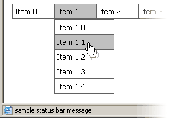

CONTEXT HELP
Status Bar Messages

Displays the text in the status bar of the browser window when mouse is over the menu item. Can be used to supply additional information (up to about a dozen of words) about the targeted document.